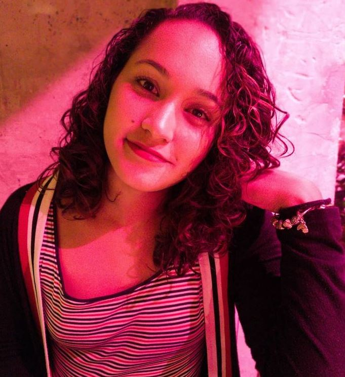

UX/UI
DESIGN
PORTFOLIO
My Name is Mariana Mendes and I am UX/UI Designer



Mariana Mendes
10-05-1996
Brazil, Brasília
mare.s.mendes@gmail.com
Education
Bachelor of Software Engineering
University of Brasilia (UnB)
2014 - 2021
Experience
UI/UX Designer
ITRAC - Information Technology Research and Application Center
+ I am responsible for the UX/UI of the mobile app "Meu gov.br".
+ We use User Surveys, Usability Tests, A / B tests, Heuristic Analysis,
+ Low and High Fidelity Prototypes using Figma to improve the UX.
UI/UX Designer
much. GmbH
+ As a freelancer I am responsible for understanding user stories and turning them into solutions for users.
+ turning them into solutions for users.
+ I use Figma to create Wireframes and Low and high fidelity prototypes.